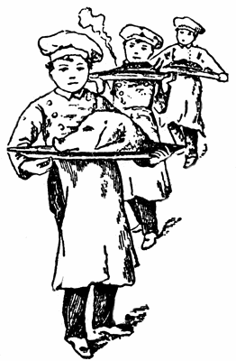

Gastronomy on La Silla
How to keep hungry heroes healthy and happy

When Captain James Cook served vegetable soup to his crew in 1770 it was not just because of philanthropy or his name. And although likening Cerro La Silla to an old-fashioned warship with its high stern (3.6 m) and low foredeck, may not stand up in all details, some basic problems are still shared with the great navigator. The isolation of La Silla (nearest port Coquimbo over 150 km away), the physical and mental strain from day- and nightwork during long (observing) runs, and the deserted, undulating surroundings could well be expected to have adverse effects on the morale of visiting astronomers and mountain staff. But happily, ESO is in a much better position than most other observatories to fight these natural evils, in particular because of its unique kitchen. "Good and healthy food need not be expensive" and "Food tastes as it looks like" are two of the axioms of German-born ESO Chef-cuisinier Erich Schumann, who is also the maitre d'hôtel "ESO La Silla" and a frequent contributor to international gastronomical journals. It is a proven and curious (but not necessarily disturbing) fact that many American astronomers react to the name of ESO by turning their eyes towards the heavens with an "Oh yes, that is where those Europeans have that real cuisine française!".With 25 years' experience, also from several major European restaurants, Mr. Schumann and his competent Chilean staff daily live up to their internationally established reputation and – with great care and insight – they prepare our stomachs and spirits for the hardships of a mountain observatory. These are Mr. Schumann's own words about some of the secrets of how to keep the ESO people happy and in good shape:
How to Start the Day. . . . .
The day for the La Silla kitchen starts shortly before 7.00 when the first cooks arrive to prepare breakfast under the direction of Juan Fernández. Two kinds of juice (one is fresh orange juice, when oranges are in season), yoghurt, butter, cheese, different hams and sausages and two different marmelades complete the layout on the self-service counter. We also serve three kinds of bread; two are a German-type brown bread, flown in from Santiago twice a week with our daily air-service. Real good Brazilian coffee is prepared in the automatic coffee-machine, and we have tea, herb tea, milo (para campeones I) and fresh milk. Fried eggs with ham and bacon, scrambled eggs, omelette with ham, cheese, tomatoes, onions or whatever you like can be ordered to the waiter.
Many astronomers prefer a kind of heavy sandwich called completo. This is really something to restore lost energy after a busy cold night at the telescopes or when they wake up in the afternoon: two pieces of toast, topped with slices of baked ham, tomatoes and two fried "fresh farm" eggs.
For lunch and dinner, we serve dishes which must satisfy Chilean as well as European employees and astronomers from all over the world. That is not always easy:Dinner begins at 18.00 in summertime and at 17.30 in wintertime. You may start with a little appetizer such as stuffed avocado with tuna fish, or diced chicken, ham or langostinos (jumbo shrimps).
Chilean Seafood!
Seafood is served very often on La Silla and is much appreciated by our guests. We buy fresh fish and seafood twice a week. It is always amazing to go to the markets in La Serena and Coquimbo and see the wide variety, just out of the Pacific Ocean: congrio, corvina, cojinova, merluza, cabinza, sardinas, lenguados, atún (conger-eel, seabass, cajinova, sardines, soles, tunafish). Mariscos are different kinds of mussels and shells which can be eaten raw with lemon or prepared in different ways. Locos (abalones) are delicious, either cold with different kinds of dressing, or warm with grated cheese and gratinated. Erizos (sea-urchins) are liked by people who prefer something fancy; they have a strong taste of iodine.
Ostiones (coquilles St-Jacques) are originally from the beaches of Tongoy and Guanaqueros. Only once a year can they be taken out of the ocean. That is in the wintertime when heavy waves loosen them from the sandy or rocky grounds, lift them up to the surface and throw them to the beach. This year we have had ostiones quite often, but until recently, it was prohibited to collect them commercially during almost 15 years, because the Fishing Department feared that the ostiones families might die out.
Of course, not everything will be on the market every day. Some fish are only in season when they come near the surface or near the coast. Fishing in the La Serena/Coquimbo area is done mostly by small boats, and when the weather conditions at sea are bad, there will be no fish on the market.
For La Silla we buy only the freshest merchandise.
What They Like to Eat
Here are some menu items and recipes of the favorite dishes we serve on La Silla:
Mariscos surtidos: choice of seafood either raw or cooked and served as salads, cocktails or together with tomatoes or avocados. Langostinos with a hot tomato, onion and pepperoni sauce.
Cordero de lechón (Iamb) is very good when served from the grill (charcoal) with herb butter and baked potatoes and the delicious fresh green beans. When the summertime comes and the days are longer we serve a parillada outside in the patio. Mixed grill on hot charcoal is the summit of every Sunday night
Caldillo de mariscos: a thick soup-bowl with all the variety of fish and seafood we can lay our "knives" on. I must admit that fish and seafood served or prepared without the famous Chilean wines are not the same. (A good fish-chowder without a glass of white wine is only half the pleasure, but on La Silla no alcoholic beverages are allowed.)
Pizzas: In winter we often serve a dozen varieties. Most ordered is the pizza "Portenno" with seafood, or pizza "EI Padrino" with tomatoes, sausage, ham, sweet pickles, olives and two kinds of cheese. "EI Padrino" (The Godfather) is the "undercover" name of a well-known ESO astronomer on La Silla who claims that he has seen Etna only on postcards!
Congrio trito: deep fried conger-eel is one of the favorite dishes served in the dining-room. The fish is seasoned with salt, pepper, lemon juice, a little bit of crushed fresh garlic, turned over in flour, passed through beaten-up eggs and fried in deep oil.
Cazuela de vacuno, ave or cordero: A heavy, hearty meat, chicken or lamb soup-bowl with all kinds of fresh vegetables, noodles/rice or corn flour. A real dish for a cold winter day. On the side you may serve a fresh tomato salad with some chopped onions. (A good vino tinto would complete that luncheon.)
Seviche de corvina: a cold, hot-spiced, raw entree of small diced seabass. You must take very fresh raw seabass, cut in small cubes, seasoned with lots of lemon juice, salt, pepper, hot Chilean peppersauce (called salsa de aji), some drops of good oil and put in the refrigerator for a couple of hours. Shortly before serving, mix with egg-yolk, garnish with chopped parsley and cilantro or chives. Serve cold.
Empanadas, also called stuffed turnovers with either minced meat, fish seafood or with cheese. These empanadas are a must every Sunday or holiday in Chile. Minced meat and onions are cooked together with spices such as oregano. Once the meat is cooled off the turnovers are stuffed with that mixture. They are baked in the oven, or when you want them small, they are deep-fried.
Desserts
Cakes, pies and small pastry are served very often for dinner as a dessert, especially apple pie, lemon pie and sweet cheese cake.
A special Chilean fruit is the papaya. It is small, of yellow colour and must be cooked in syrup. You cannot eat it raw. It comes mostly from the La Serena and Elqui valley area. The chirimoyas (sugarfruit) are in season from September to January. White fruit meat with small black stones inside. Very tasty and sweet. Served with orange juice or ice cream.
Last but not least, a small variety of good cheese is always at choice in the self-service. In particular, the Chilean Camembert is very tasty.
We have of course many other dishes on the programme but I think that this gives the reader some idea about our menus. We like to serve good and healthy food and are of course always happy to meet special diet requirements, whenever this is possible. Our level may not be compared to that of "Tour d'Argent" neither by the price, nor the selection, but considering our limitations because of our geographical position and our budget, I believe that we do help people to survive the Atacama desert and the visiting astronomers to return to Europe with a pleasant memory of the gastronomical life on La Silla.
Bon appétit!!!
© The ESO Messenger (Editor: Richard West)